Computing neuron network (population) properties
Contents
The functions needed to compute the properties are in
addpath('Functions\')
Neuron network model and parameters
The network consists of N populations modeled by the aEIF neuron. Each cell i of each population receives an independent, external input with rate 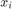. Moreover, the populations are connected, and excite or inhibite each other. Therefore, each neuron of the same population receives a total (Gaussian) input with the following mean and variance:
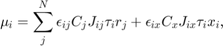
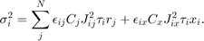
The parameter 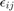 denotes the connection probability from population j to i, whereby 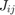 represents the respective weights (related to PSPs). 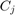 describes the number of cells within population j.
We set the neural parameters and the connections as follows:
ModPar = [10.0,5.0,-70.0,2.0,-50.0,-70.0,-20.0,5.0,100.0;
5.0,5.0,-70.0,2.0,-50.0,-70.0,-20.0,10.0,50.0];
ConPar.R = [0.1,0.6,1.0;0.5,0.5,1.0];
ConPar.NN = [3000,750,1000];
ConPar.J = [0.3,-1.5,0.5;1.0,-1.0,0.5];
Network properties
We define the external stimulation for each population:
rx = [6.0,5.0]; r0 = [1.0,4.0];
and compute the network properties
rates = CompRate_aEIF_Net(ModPar,ConPar,r0,rx,0); VarISIs = CompVarISI_aEIF_Net(rates,rx,ModPar,ConPar); [Vm,Vv] = CompMemPotStat_aEIF_Net(rates,rx,ModPar,ConPar);
We summarize the firing rates, the variance of the interspike intervals, mean and variance of the membrane potentials for each population:
N = size(ModPar,1); names = cell(1,N); for i=1:N names{i} = ['Pop' num2str(i)]; end subplot(2,2,1); plot(1:N,rates,'sb','MarkerFaceColor','b'); set(gca,'xtick',1:N,'xticklabel',names) xlim([0.5,N+0.5]); ylabel('rate (Hz)') subplot(2,2,2); plot(1:N,sqrt(VarISIs),'sb','MarkerFaceColor','b'); set(gca,'xtick',1:N,'xticklabel',names) xlim([0.5,N+0.5]); ylabel('SD of ISI (s)') subplot(2,2,3); plot(1:N,Vm,'sb','MarkerFaceColor','b'); set(gca,'xtick',1:N,'xticklabel',names) xlim([0.5,N+0.5]); ylabel('mean V (mV)') subplot(2,2,4); plot(1:N,sqrt(Vv),'sb','MarkerFaceColor','b'); set(gca,'xtick',1:N,'xticklabel',names) xlim([0.5,N+0.5]); ylabel('SD of V (mV)') snapnow; close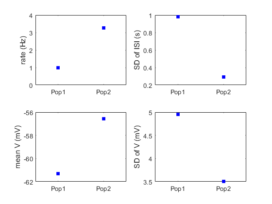
Analysis of network dynamics
Around a fixed point, the dynamics of the network is captured sufficiently well by a first-order differential equation (low-pass filter of the steady-state solution):
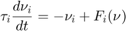
where 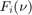 denotes the steady-state solution and is given by
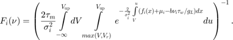
with 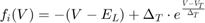, and 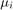 as well as 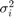 given above. The nullclines denote the set points in the phase plane where one of the variables is constant (that is, does not change in time). Hence, the 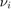-nullcline is given by
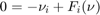
where is constant.
NN = 10; Values=zeros(N,NN); for i=1:N Values(i,:) = linspace(max(0.0,0.8*rates(i)),1.2*rates(i),NN); end NullArray = CompNullclines_aEIF_Net(ModPar,ConPar,rates,rx,Values);
The intersection point(s) of the nullclines signify the fixed point(s) of the system. By linearizing the system's equation around the fixed point(s), we can determine the stability. The stability is given by the real parts of the eigenvalues computed from the Jacobian matrix at the respective FP:
![$$ \left( \begin{array}{cccc} (\frac{\partial F_1}{\partial\nu_1} - 1)/\tau_1 & \frac{\partial F_1}{\partial\nu_2}/\tau_1 & ... & \frac{\partial F_1}{\partial\nu_n}/\tau_1 \\ \frac{\partial F_2}{\partial\nu_1}/\tau_2 & (\frac{\partial F_2}{\partial\nu_2} - 1)/\tau_2 & ... & \frac{\partial F_2}{\partial\nu_n}/\tau_2 \\ \vdots & \ddots & \vdots & \vdots \\ \frac{\partial F_n}{\partial\nu_1}/\tau_n & ... & \frac{\partial F_n}{\partial\nu_\mathrm{n-1}}/\tau_n & (\frac{\partial F_n}{\partial\nu_n} - 1)/\tau_n \end{array} \right) $$](CompNeuNetProp_eq03204366834362614479.png)
with
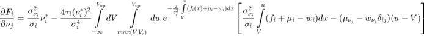
where 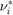 denotes the i-th population activity at the fixed point, 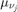, 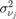 and 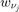 represent the derivative of , and 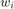 with respect to 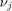, respectively, and 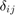 denotes the Kroneker delta.
Lambs = CompEigVal_aEIF_Net(ModPar,ConPar,rates,rx,NullArray,1);
The vector field is the set of arrows given by the derivatives evaluated at each point in the phase plane.
r_x = linspace(Values(1,1),Values(1,end),10); r_y = linspace(Values(2,1),Values(2,end),10); [x,y] = meshgrid(r_x,r_y); [u,v] = CompVecField_aEIF_Net(r_x,r_y,rx,ModPar,ConPar);
We can summarize the dynamics in a phase plane:
figure(); hold on; plot(NullArray(:,1,1),NullArray(:,2,1),'b') plot(NullArray(:,1,2),NullArray(:,2,2),'r') quiver(x,y,u,v,'color',[0.5,0.5,0.5]) if Lambs<0 plot(rates(1),rates(2),'ok','MarkerFaceColor','k') else plot(rates(1),rates(2),'ok') end xlabel('1st population activity (sp/s)') ylabel('2nd population activity (sp/s)') snapnow; close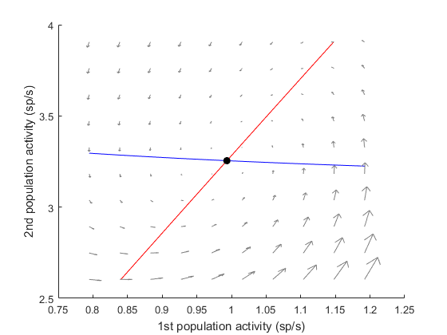
Moreover, we can translate the 'phase plane/vector field' into an energy landscape to visualize the stability of a FP. In case of a one-dimensional system, the energy 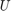 is given by (Deco, 2009)
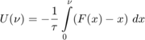
When we are dealing with an N-dimensional system, we keep (N-1) rates constant and vary along the remaining dimension.
id = 1; values = linspace(max(0.0,0.8*rates(id)),1.2*rates(id),40); E = CompEnergy_aEIF_Net(values,ModPar,ConPar,rates,rx,id); plot(values,E) xlabel(['Activity of population ' num2str(id) ' (sp/s)']) ylabel('Potential landscape (a.u.)') snapnow; close
Please note that the lower limit of the integral was set to the first entry of the array.
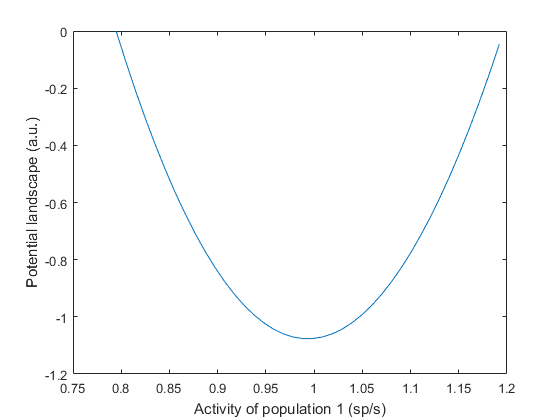